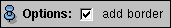

This module reconstructs a surface from a
label field like SurfaceGen, but the surface exactly matches the
voxel boundaries. Useful for special purpose applications and for
development.
Press the Apply button to start the computation.
Connections
Data[required]
Connection to input label field.
Ports
Options

Same behavior as the corresponding option in the SurfaceGen module.